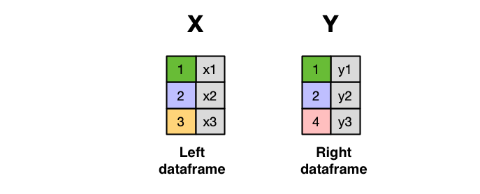
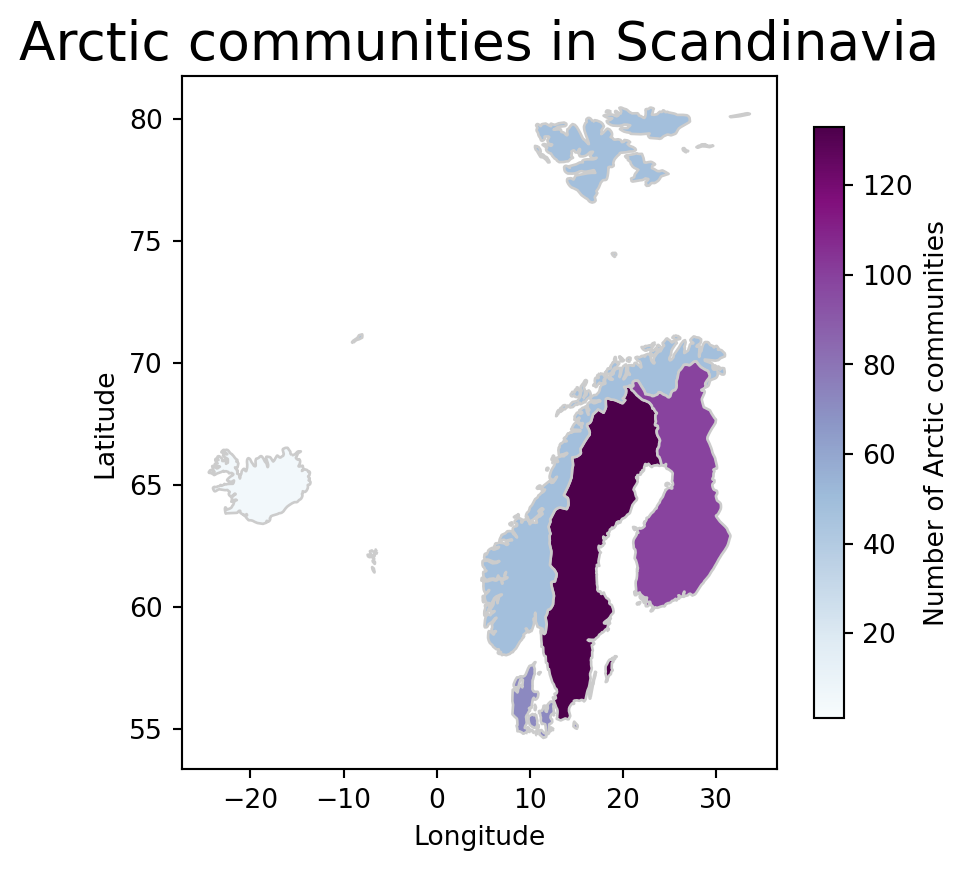

import pandas as pd
import matplotlib.pyplot as plt
import geopandas as gpd13 Merging data
In this section we will learn how to join dataframes and will apply this to creating a choropleth map with geopandas.
13.1 Types of Joins
Frequently, analysis of data will require merging separate dataframes. There are multiple ways to merge observations. When conceptualizing merges, we think of two tables, one on the left and one on the right.

13.1.1 Inner Join
An inner join is when you merge the subset of rows that have matches in both the left table and the right table.

13.1.2 Left Join
A left join takes all of the rows from the left table, and merges on the data from matching rows in the right table. Keys that don’t match from the left table are still provided with a missing value (na) from the right table.

13.1.3 Right Join
A right join is the same as a left join, except that all of the rows from the right table are included with matching data from the left, or a missing value. Notice that left and right joins can ultimately be the same depending on the positions of the tables.

13.1.4 Full Join
Finally, a full outer join (or just full join) includes all data from all rows in both tables, and includes missing values wherever necessary.

Sometimes people represent joins as Venn diagrams, showing which parts of the left and right tables are included in the results for each join. This representation is useful, however, they miss part of the story related to where the missing value comes from in each result.

13.2 Goal
Our goal in this lesson will be to join two datasets, one with demographic information and another with country outlines, to create the following choropleth map showing the number of Arctic communities by country and their location in Scandinavia:

13.3 Data
We will use two datasets in this lesson. The first dataset is Natural Earth’s medium scale cultural boundaries data (1:50m). We can obtain this dataset by downloading the shapefile. Natural Earth is a public domain dataset with ready-to-use data for creating maps.
The second dataset we will use is a list of Arctic communities and their location (Brook, 2023) which can be accessed through the DataONE repository. This is a GeoJSON file with the following attributes:
- name: name of Arctic community,
- population: population of Arctic community, as of 2022
- country: country that the Arctic community falls within (see dataset metadata for the codes)
- geoname-id: numeric codes that uniquely identify all administrative/legal and statistical geographic areas for which the Census Bureau tabulates data
13.4 Data preparation
We start our analysis by importing the necessary libraries:
The Natural Earth dataset has many columns, so we need to update the pandas display settings to show all columns:
# display all column when looking at dataframes
pd.set_option("display.max.columns", None)13.4.1 Countries
Now we move on to preparing the polygons for the Scandinavian countries. To import the Natural Earth countries polygons we use the geopandas.read_file() function again:
# import countries polygons
countries = gpd.read_file('data/ne_50m_admin_0_countries/ne_50m_admin_0_countries.shp')
countries.head()| featurecla | scalerank | LABELRANK | SOVEREIGNT | SOV_A3 | ADM0_DIF | LEVEL | TYPE | TLC | ADMIN | ADM0_A3 | GEOU_DIF | GEOUNIT | GU_A3 | SU_DIF | SUBUNIT | SU_A3 | BRK_DIFF | NAME | NAME_LONG | BRK_A3 | BRK_NAME | BRK_GROUP | ABBREV | POSTAL | FORMAL_EN | FORMAL_FR | NAME_CIAWF | NOTE_ADM0 | NOTE_BRK | NAME_SORT | NAME_ALT | MAPCOLOR7 | MAPCOLOR8 | MAPCOLOR9 | MAPCOLOR13 | POP_EST | POP_RANK | POP_YEAR | GDP_MD | GDP_YEAR | ECONOMY | INCOME_GRP | FIPS_10 | ISO_A2 | ISO_A2_EH | ISO_A3 | ISO_A3_EH | ISO_N3 | ISO_N3_EH | UN_A3 | WB_A2 | WB_A3 | WOE_ID | WOE_ID_EH | WOE_NOTE | ADM0_ISO | ADM0_DIFF | ADM0_TLC | ADM0_A3_US | ADM0_A3_FR | ADM0_A3_RU | ADM0_A3_ES | ADM0_A3_CN | ADM0_A3_TW | ADM0_A3_IN | ADM0_A3_NP | ADM0_A3_PK | ADM0_A3_DE | ADM0_A3_GB | ADM0_A3_BR | ADM0_A3_IL | ADM0_A3_PS | ADM0_A3_SA | ADM0_A3_EG | ADM0_A3_MA | ADM0_A3_PT | ADM0_A3_AR | ADM0_A3_JP | ADM0_A3_KO | ADM0_A3_VN | ADM0_A3_TR | ADM0_A3_ID | ADM0_A3_PL | ADM0_A3_GR | ADM0_A3_IT | ADM0_A3_NL | ADM0_A3_SE | ADM0_A3_BD | ADM0_A3_UA | ADM0_A3_UN | ADM0_A3_WB | CONTINENT | REGION_UN | SUBREGION | REGION_WB | NAME_LEN | LONG_LEN | ABBREV_LEN | TINY | HOMEPART | MIN_ZOOM | MIN_LABEL | MAX_LABEL | LABEL_X | LABEL_Y | NE_ID | WIKIDATAID | NAME_AR | NAME_BN | NAME_DE | NAME_EN | NAME_ES | NAME_FA | NAME_FR | NAME_EL | NAME_HE | NAME_HI | NAME_HU | NAME_ID | NAME_IT | NAME_JA | NAME_KO | NAME_NL | NAME_PL | NAME_PT | NAME_RU | NAME_SV | NAME_TR | NAME_UK | NAME_UR | NAME_VI | NAME_ZH | NAME_ZHT | FCLASS_ISO | TLC_DIFF | FCLASS_TLC | FCLASS_US | FCLASS_FR | FCLASS_RU | FCLASS_ES | FCLASS_CN | FCLASS_TW | FCLASS_IN | FCLASS_NP | FCLASS_PK | FCLASS_DE | FCLASS_GB | FCLASS_BR | FCLASS_IL | FCLASS_PS | FCLASS_SA | FCLASS_EG | FCLASS_MA | FCLASS_PT | FCLASS_AR | FCLASS_JP | FCLASS_KO | FCLASS_VN | FCLASS_TR | FCLASS_ID | FCLASS_PL | FCLASS_GR | FCLASS_IT | FCLASS_NL | FCLASS_SE | FCLASS_BD | FCLASS_UA | geometry | |
|---|---|---|---|---|---|---|---|---|---|---|---|---|---|---|---|---|---|---|---|---|---|---|---|---|---|---|---|---|---|---|---|---|---|---|---|---|---|---|---|---|---|---|---|---|---|---|---|---|---|---|---|---|---|---|---|---|---|---|---|---|---|---|---|---|---|---|---|---|---|---|---|---|---|---|---|---|---|---|---|---|---|---|---|---|---|---|---|---|---|---|---|---|---|---|---|---|---|---|---|---|---|---|---|---|---|---|---|---|---|---|---|---|---|---|---|---|---|---|---|---|---|---|---|---|---|---|---|---|---|---|---|---|---|---|---|---|---|---|---|---|---|---|---|---|---|---|---|---|---|---|---|---|---|---|---|---|---|---|---|---|---|---|---|---|---|---|---|---|---|
| 0 | Admin-0 country | 1 | 3 | Zimbabwe | ZWE | 0 | 2 | Sovereign country | 1 | Zimbabwe | ZWE | 0 | Zimbabwe | ZWE | 0 | Zimbabwe | ZWE | 0 | Zimbabwe | Zimbabwe | ZWE | Zimbabwe | NaN | Zimb. | ZW | Republic of Zimbabwe | NaN | Zimbabwe | NaN | NaN | Zimbabwe | NaN | 1 | 5 | 3 | 9 | 14645468.0 | 14 | 2019 | 21440 | 2019 | 5. Emerging region: G20 | 5. Low income | ZI | ZW | ZW | ZWE | ZWE | 716 | 716 | 716 | ZW | ZWE | 23425004 | 23425004 | Exact WOE match as country | ZWE | NaN | ZWE | ZWE | ZWE | ZWE | ZWE | ZWE | ZWE | ZWE | ZWE | ZWE | ZWE | ZWE | ZWE | ZWE | ZWE | ZWE | ZWE | ZWE | ZWE | ZWE | ZWE | ZWE | ZWE | ZWE | ZWE | ZWE | ZWE | ZWE | ZWE | ZWE | ZWE | ZWE | -99 | -99 | Africa | Africa | Eastern Africa | Sub-Saharan Africa | 8 | 8 | 5 | -99 | 1 | 0.0 | 2.5 | 8.0 | 29.925444 | -18.911640 | 1159321441 | Q954 | زيمبابوي | জিম্বাবুয়ে | Simbabwe | Zimbabwe | Zimbabue | زیمبابوه | Zimbabwe | Ζιμπάμπουε | זימבבואה | ज़िम्बाब्वे | Zimbabwe | Zimbabwe | Zimbabwe | ジンバブエ | 짐바브웨 | Zimbabwe | Zimbabwe | Zimbábue | Зимбабве | Zimbabwe | Zimbabve | Зімбабве | زمبابوے | Zimbabwe | 津巴布韦 | 辛巴威 | Admin-0 country | NaN | Admin-0 country | NaN | NaN | NaN | NaN | NaN | NaN | NaN | NaN | NaN | NaN | NaN | NaN | NaN | NaN | NaN | NaN | NaN | NaN | NaN | NaN | NaN | NaN | NaN | NaN | NaN | NaN | NaN | NaN | NaN | NaN | NaN | POLYGON ((31.28789 -22.40205, 31.19727 -22.344... |
| 1 | Admin-0 country | 1 | 3 | Zambia | ZMB | 0 | 2 | Sovereign country | 1 | Zambia | ZMB | 0 | Zambia | ZMB | 0 | Zambia | ZMB | 0 | Zambia | Zambia | ZMB | Zambia | NaN | Zambia | ZM | Republic of Zambia | NaN | Zambia | NaN | NaN | Zambia | NaN | 5 | 8 | 5 | 13 | 17861030.0 | 14 | 2019 | 23309 | 2019 | 7. Least developed region | 4. Lower middle income | ZA | ZM | ZM | ZMB | ZMB | 894 | 894 | 894 | ZM | ZMB | 23425003 | 23425003 | Exact WOE match as country | ZMB | NaN | ZMB | ZMB | ZMB | ZMB | ZMB | ZMB | ZMB | ZMB | ZMB | ZMB | ZMB | ZMB | ZMB | ZMB | ZMB | ZMB | ZMB | ZMB | ZMB | ZMB | ZMB | ZMB | ZMB | ZMB | ZMB | ZMB | ZMB | ZMB | ZMB | ZMB | ZMB | ZMB | -99 | -99 | Africa | Africa | Eastern Africa | Sub-Saharan Africa | 6 | 6 | 6 | -99 | 1 | 0.0 | 3.0 | 8.0 | 26.395298 | -14.660804 | 1159321439 | Q953 | زامبيا | জাম্বিয়া | Sambia | Zambia | Zambia | زامبیا | Zambie | Ζάμπια | זמביה | ज़ाम्बिया | Zambia | Zambia | Zambia | ザンビア | 잠비아 | Zambia | Zambia | Zâmbia | Замбия | Zambia | Zambiya | Замбія | زیمبیا | Zambia | 赞比亚 | 尚比亞 | Admin-0 country | NaN | Admin-0 country | NaN | NaN | NaN | NaN | NaN | NaN | NaN | NaN | NaN | NaN | NaN | NaN | NaN | NaN | NaN | NaN | NaN | NaN | NaN | NaN | NaN | NaN | NaN | NaN | NaN | NaN | NaN | NaN | NaN | NaN | NaN | POLYGON ((30.39609 -15.64307, 30.25068 -15.643... |
| 2 | Admin-0 country | 1 | 3 | Yemen | YEM | 0 | 2 | Sovereign country | 1 | Yemen | YEM | 0 | Yemen | YEM | 0 | Yemen | YEM | 0 | Yemen | Yemen | YEM | Yemen | NaN | Yem. | YE | Republic of Yemen | NaN | Yemen | NaN | NaN | Yemen, Rep. | NaN | 5 | 3 | 3 | 11 | 29161922.0 | 15 | 2019 | 22581 | 2019 | 7. Least developed region | 4. Lower middle income | YM | YE | YE | YEM | YEM | 887 | 887 | 887 | RY | YEM | 23425002 | 23425002 | Exact WOE match as country | YEM | NaN | YEM | YEM | YEM | YEM | YEM | YEM | YEM | YEM | YEM | YEM | YEM | YEM | YEM | YEM | YEM | YEM | YEM | YEM | YEM | YEM | YEM | YEM | YEM | YEM | YEM | YEM | YEM | YEM | YEM | YEM | YEM | YEM | -99 | -99 | Asia | Asia | Western Asia | Middle East & North Africa | 5 | 5 | 4 | -99 | 1 | 0.0 | 3.0 | 8.0 | 45.874383 | 15.328226 | 1159321425 | Q805 | اليمن | ইয়েমেন | Jemen | Yemen | Yemen | یمن | Yémen | Υεμένη | תימן | यमन | Jemen | Yaman | Yemen | イエメン | 예멘 | Jemen | Jemen | Iémen | Йемен | Jemen | Yemen | Ємен | یمن | Yemen | 也门 | 葉門 | Admin-0 country | NaN | Admin-0 country | NaN | NaN | NaN | NaN | NaN | NaN | NaN | NaN | NaN | NaN | NaN | NaN | NaN | NaN | NaN | NaN | NaN | NaN | NaN | NaN | NaN | NaN | NaN | NaN | NaN | NaN | NaN | NaN | NaN | NaN | NaN | MULTIPOLYGON (((53.08564 16.64839, 52.58145 16... |
| 3 | Admin-0 country | 3 | 2 | Vietnam | VNM | 0 | 2 | Sovereign country | 1 | Vietnam | VNM | 0 | Vietnam | VNM | 0 | Vietnam | VNM | 0 | Vietnam | Vietnam | VNM | Vietnam | NaN | Viet. | VN | Socialist Republic of Vietnam | NaN | Vietnam | NaN | NaN | Vietnam | NaN | 5 | 6 | 5 | 4 | 96462106.0 | 16 | 2019 | 261921 | 2019 | 5. Emerging region: G20 | 4. Lower middle income | VM | VN | VN | VNM | VNM | 704 | 704 | 704 | VN | VNM | 23424984 | 23424984 | Exact WOE match as country | VNM | NaN | VNM | VNM | VNM | VNM | VNM | VNM | VNM | VNM | VNM | VNM | VNM | VNM | VNM | VNM | VNM | VNM | VNM | VNM | VNM | VNM | VNM | VNM | VNM | VNM | VNM | VNM | VNM | VNM | VNM | VNM | VNM | VNM | -99 | -99 | Asia | Asia | South-Eastern Asia | East Asia & Pacific | 7 | 7 | 5 | 2 | 1 | 0.0 | 2.0 | 7.0 | 105.387292 | 21.715416 | 1159321417 | Q881 | فيتنام | ভিয়েতনাম | Vietnam | Vietnam | Vietnam | ویتنام | Viêt Nam | Βιετνάμ | וייטנאם | वियतनाम | Vietnám | Vietnam | Vietnam | ベトナム | 베트남 | Vietnam | Wietnam | Vietname | Вьетнам | Vietnam | Vietnam | В'єтнам | ویتنام | Việt Nam | 越南 | 越南 | Admin-0 country | NaN | Admin-0 country | NaN | NaN | NaN | NaN | NaN | NaN | NaN | NaN | NaN | NaN | NaN | NaN | NaN | NaN | NaN | NaN | NaN | NaN | NaN | NaN | NaN | NaN | NaN | NaN | NaN | NaN | NaN | NaN | NaN | NaN | NaN | MULTIPOLYGON (((104.06396 10.39082, 104.08301 ... |
| 4 | Admin-0 country | 5 | 3 | Venezuela | VEN | 0 | 2 | Sovereign country | 1 | Venezuela | VEN | 0 | Venezuela | VEN | 0 | Venezuela | VEN | 0 | Venezuela | Venezuela | VEN | Venezuela | NaN | Ven. | VE | Bolivarian Republic of Venezuela | República Bolivariana de Venezuela | Venezuela | NaN | NaN | Venezuela, RB | NaN | 1 | 3 | 1 | 4 | 28515829.0 | 15 | 2019 | 482359 | 2014 | 5. Emerging region: G20 | 3. Upper middle income | VE | VE | VE | VEN | VEN | 862 | 862 | 862 | VE | VEN | 23424982 | 23424982 | Exact WOE match as country | VEN | NaN | VEN | VEN | VEN | VEN | VEN | VEN | VEN | VEN | VEN | VEN | VEN | VEN | VEN | VEN | VEN | VEN | VEN | VEN | VEN | VEN | VEN | VEN | VEN | VEN | VEN | VEN | VEN | VEN | VEN | VEN | VEN | VEN | -99 | -99 | South America | Americas | South America | Latin America & Caribbean | 9 | 9 | 4 | -99 | 1 | 0.0 | 2.5 | 7.5 | -64.599381 | 7.182476 | 1159321411 | Q717 | فنزويلا | ভেনেজুয়েলা | Venezuela | Venezuela | Venezuela | ونزوئلا | Venezuela | Βενεζουέλα | ונצואלה | वेनेज़ुएला | Venezuela | Venezuela | Venezuela | ベネズエラ | 베네수엘라 | Venezuela | Wenezuela | Venezuela | Венесуэла | Venezuela | Venezuela | Венесуела | وینیزویلا | Venezuela | 委内瑞拉 | 委內瑞拉 | Admin-0 country | NaN | Admin-0 country | NaN | NaN | NaN | NaN | NaN | NaN | NaN | NaN | NaN | NaN | NaN | NaN | NaN | NaN | NaN | NaN | NaN | NaN | NaN | NaN | NaN | NaN | NaN | NaN | NaN | NaN | NaN | NaN | NaN | NaN | NaN | MULTIPOLYGON (((-60.82119 9.13838, -60.94141 9... |
Taking a quick look at this dataset:
# quick view
countries.plot()<AxesSubplot:>
Notice the column names are in all caps. It is easier to work with column names in small caps because we don’t need to be pressing shift or capslock. We can do this update like this:
# re-assign the column names: .str.lower() makes them lower case
countries.columns = countries.columns.str.lower()
print(countries.columns)Index(['featurecla', 'scalerank', 'labelrank', 'sovereignt', 'sov_a3',
'adm0_dif', 'level', 'type', 'tlc', 'admin',
...
'fclass_tr', 'fclass_id', 'fclass_pl', 'fclass_gr', 'fclass_it',
'fclass_nl', 'fclass_se', 'fclass_bd', 'fclass_ua', 'geometry'],
dtype='object', length=169)Finally, we have too many columns, so let’s only keep a few*:
# remeber: the geometry column has the polygons for each country
countries_sub = countries[['admin','type','geometry']]
countries_sub.head()| admin | type | geometry | |
|---|---|---|---|
| 0 | Zimbabwe | Sovereign country | POLYGON ((31.28789 -22.40205, 31.19727 -22.344... |
| 1 | Zambia | Sovereign country | POLYGON ((30.39609 -15.64307, 30.25068 -15.643... |
| 2 | Yemen | Sovereign country | MULTIPOLYGON (((53.08564 16.64839, 52.58145 16... |
| 3 | Vietnam | Sovereign country | MULTIPOLYGON (((104.06396 10.39082, 104.08301 ... |
| 4 | Venezuela | Sovereign country | MULTIPOLYGON (((-60.82119 9.13838, -60.94141 9... |
13.4.2 Arctic communities
In the same way as we previously used pandas.read_csv(), we can read in the Arctic communities data directly from the data repository using geopandas.read_file():
# read in Arctic communities data
communities = gpd.read_file('https://cn.dataone.org/cn/v2/resolve/urn%3Auuid%3Aed7718ae-fb0d-43dd-9270-fbfe80bfc7a4')
communities.head()| name | population | country | geoname-id | geometry | |
|---|---|---|---|---|---|
| 0 | Udomlya | 32373 | RU | 452949 | POINT (34.99250 57.87944) |
| 1 | Valmiera | 26963 | LV | 453754 | POINT (25.42751 57.54108) |
| 2 | Ventspils | 42644 | LV | 454310 | POINT (21.57288 57.38988) |
| 3 | Vec-Liepāja | 85260 | LV | 454432 | POINT (21.01667 56.53333) |
| 4 | Tukums | 18348 | LV | 454768 | POINT (23.15528 56.96694) |
Notice that the countries and communities GeoDataFrames both have the same crs:
countries.crs == communities.crsTrueThis makes it easy to take a quick look at our communities data by plotting it on top of the countries dataframe:
fig, ax = plt.subplots()
countries.plot(ax=ax)
communities.plot(ax=ax, color='red')
plt.show()Next, we want to calculate the number of Arctic communities by country.
# calculate number of communities by country
# extract number of communities by country as a pd.Series
n_comms = communities.groupby('country').count().name
# convert the pd.Series into a pd.DataFrame and update it
n_comms = pd.DataFrame(n_comms).rename(columns={'name':'n_communities'}).reset_index()Let’s break this down a bit:
- We start with our
communitiesdataframe and usegroupby('country')to group by country code, - then we use
count()as an aggregator function to count how many rows belong to each country code. - The result of this operation is a dataframe (run
communities.groupby('country').count()to check) and we select a single column with the counts by selecting thenamecolumn. - The result is a single
pd.Seriesin the variablen_comms. - We then convert this
pd.Seriesinto apd.DataFrameand clean it up a bit.
# number of communities per country
n_comms| country | n_communities | |
|---|---|---|
| 0 | AX | 1 |
| 1 | BY | 8 |
| 2 | CA | 7 |
| 3 | DK | 72 |
| 4 | EE | 14 |
| 5 | FI | 98 |
| 6 | FO | 1 |
| 7 | GB | 96 |
| 8 | GL | 1 |
| 9 | IS | 5 |
| 10 | LT | 26 |
| 11 | LV | 25 |
| 12 | NO | 48 |
| 13 | RU | 774 |
| 14 | SE | 133 |
| 15 | US | 115 |
Since we only want data from Scandinavia, we can use the codes for these countries to locate these rows:
# select Scandinavia data
scandi_codes = ['DK','NO','SE','FO','FI','IS','AX']
scandi_n_comms = n_comms[n_comms.country.isin(scandi_codes)].copy()
scandi_n_comms| country | n_communities | |
|---|---|---|
| 0 | AX | 1 |
| 3 | DK | 72 |
| 5 | FI | 98 |
| 6 | FO | 1 |
| 9 | IS | 5 |
| 12 | NO | 48 |
| 14 | SE | 133 |
13.5 Merge datasets
To merge two datasets they need to have at least one column in common. Currently our datasets do not have any columns in common:
countries_sub.head(2)| admin | type | geometry | |
|---|---|---|---|
| 0 | Zimbabwe | Sovereign country | POLYGON ((31.28789 -22.40205, 31.19727 -22.344... |
| 1 | Zambia | Sovereign country | POLYGON ((30.39609 -15.64307, 30.25068 -15.643... |
scandi_n_comms.head(2)| country | n_communities | |
|---|---|---|
| 0 | AX | 1 |
| 3 | DK | 72 |
We can easily fix this by adding an admin column to scandi_n_comms:
# Add country names
scandi_names = ['Aland Islands',
'Denmark',
'Finland',
'Faroe Islands',
'Iceland',
'Norway',
'Sweden']
scandi_n_comms['admin'] = scandi_names
scandi_n_comms| country | n_communities | admin | |
|---|---|---|---|
| 0 | AX | 1 | Aland Islands |
| 3 | DK | 72 | Denmark |
| 5 | FI | 98 | Finland |
| 6 | FO | 1 | Faroe Islands |
| 9 | IS | 5 | Iceland |
| 12 | NO | 48 | Norway |
| 14 | SE | 133 | Sweden |
To merge dataframes we can use the pandas.merge() function. The basic syntax for it is:
output_df = pd.merge(left_df,
right_df,
how = type_of_join,
on = column_to_join)where
output_dfis the dataframe resulting from the merge,left_dfis the dataframe we have “on the left side”,right_dfis the dataframe we have “on the right side”,howspecifies the type of join between the left and right dataframes, (check the options here), the default is to do an inner join,onspecifies the column to join on, this column must be present in both our dataframes.
In our case we want to perform an inner join between our dataframes. This will merge the subset of rows that have matches in both the left table and the right table.
# merge dataframes
scandi_countries = pd.merge(countries_sub,
scandi_n_comms,
how='inner',
on='admin')
# update index
scandi_countries = scandi_countries.set_index('admin')
scandi_countries| type | geometry | country | n_communities | |
|---|---|---|---|---|
| admin | ||||
| Sweden | Sovereign country | MULTIPOLYGON (((19.07646 57.83594, 18.99375 57... | SE | 133 |
| Norway | Sovereign country | MULTIPOLYGON (((20.62217 69.03687, 20.49199 69... | NO | 48 |
| Iceland | Sovereign country | POLYGON ((-15.54312 66.22852, -15.42847 66.224... | IS | 5 |
| Finland | Country | MULTIPOLYGON (((24.15547 65.80527, 24.04902 65... | FI | 98 |
| Faroe Islands | Dependency | MULTIPOLYGON (((-6.62319 61.80596, -6.64277 61... | FO | 1 |
| Denmark | Country | MULTIPOLYGON (((12.56875 55.78506, 12.57119 55... | DK | 72 |
Notice that the row for Aland Islands is not present in the merged dataframe. We can verify the value ‘Aland Islands’ was nowhere in our original countries dataframe like this:
# check Aland Islands is nowhere in data frame
'Aland Islands' in countries.valuesFalseThe values attribute of a dataframe returns all the values in the dataframe as an array:
# the underlying values of the dataframe
countries.valuesarray([['Admin-0 country', 1, 3, ..., nan, nan,
<POLYGON ((31.288 -22.402, 31.197 -22.345, 31.073 -22.308, 30.916 -22.291, 3...>],
['Admin-0 country', 1, 3, ..., nan, nan,
<POLYGON ((30.396 -15.643, 30.251 -15.643, 29.995 -15.644, 29.73 -15.645, 29...>],
['Admin-0 country', 1, 3, ..., nan, nan,
<MULTIPOLYGON (((53.086 16.648, 52.581 16.47, 52.448 16.391, 52.328 16.294, ...>],
...,
['Admin-0 country', 3, 4, ..., nan, nan,
<MULTIPOLYGON (((-45.718 -60.521, -45.5 -60.546, -45.386 -60.583, -45.357 -6...>],
['Admin-0 country', 3, 6, ..., nan, nan,
<POLYGON ((-63.123 18.069, -63.011 18.069, -63.012 18.045, -63.023 18.019, -...>],
['Admin-0 country', 5, 6, ..., nan, nan,
<POLYGON ((179.214 -8.524, 179.201 -8.535, 179.196 -8.535, 179.201 -8.512, 1...>]],
dtype=object)The Aland Islands is an autonomous region of Finland and there is one Arctic community registered in this region. We will directly add one to Finland to not lose this piece of data:
scandi_countries.at['Finland', 'n_communities'] += 1
print(scandi_countries.at['Finland', 'n_communities'])9913.6 Choropleth map
A choropleth map is an efficient way to visualize aggregate data per region.
To make a choropleth map from our polygons GeoDataFrame we need to specify the column parameter in plot() and make it equal to the column with the values we want to plot in each country.
scandi_countries.plot(column='n_communities',
legend=True)<AxesSubplot:>To finish, we can use matplotlib to customize our map:
fig, ax = plt.subplots(figsize=(5, 5))
#countries.plot(ax=ax)
scandi_countries.plot(ax=ax,
column='n_communities',
cmap='BuPu',
legend=True,
edgecolor="0.8",
legend_kwds={"shrink":.8,
'label': "Number of Arctic communities"
}
)
ax.set_title('Arctic communities in Scandinavia', fontsize=20)
ax.set_xlabel('Longitude')
ax.set_ylabel('Latitude')
plt.show()
Check-in
Add the scandinavian communities as dots on the choropleth map.
13.7 Complete workflow
# import libraries
import pandas as pd
import matplotlib.pyplot as plt
import geopandas as gpd
# ======= IMPORT DATA ========
# read in Arctic communities data
communities = gpd.read_file('https://cn.dataone.org/cn/v2/resolve/urn%3Auuid%3Aed7718ae-fb0d-43dd-9270-fbfe80bfc7a4')
# import countries polygons
countries = gpd.read_file('ne_50m_admin_0_countries/ne_50m_admin_0_countries.shp')
countries.head()
# ======= COUNTRIES PREPARATION =======
# make column names lower case
countries.columns = countries.columns.str.lower()
# select a subset of the columns
countries_sub = countries[['admin','type','geometry']]
# ======= COMMUNITIES PREPARATION =======
# extract number of communities by country as a pd.Series
n_comms = communities.groupby('country').count().name
# convert the pd.Series into a pd.DataFrame and update it
n_comms = pd.DataFrame(n_comms).rename(columns={'name':'n_communities'}).reset_index()
# select Scandinavia data
scandi_codes = ['DK','NO','SE','FO','FI','IS','AX']
scandi_n_comms = n_comms[n_comms.country.isin(scandi_codes)].copy()
# select communities from Scandinavian countries
scandi_communities = communities[communities.country.isin(scandi_codes)]
scandi_communities
# ======= MERGE DATASETS =======
# add names as admin column to scandi_n_comms
scandi_names = ['Aland Islands',
'Denmark',
'Finland',
'Faroe Islands',
'Iceland',
'Norway',
'Sweden']
scandi_n_comms['admin'] = scandi_names
# merge dataframes
scandi_countries = pd.merge(countries_sub,
scandi_n_comms,
how='inner',
on='admin')
# update index
scandi_countries = scandi_countries.set_index('admin')
# ======= CREATE MAP =======
fig, ax = plt.subplots()
#countries.plot(ax=ax)
scandi_countries.plot(ax=ax,
column='n_communities',
cmap='BuPu',
legend=True,
edgecolor="0.8",
legend_kwds={"shrink":.8,
'label': "Number of Arctic communities"
}
)
scandi_communities.plot(ax=ax,
edgecolor='red',
color='white')
ax.set_title('Arctic communities in Scandinavia', fontsize=20)
ax.set_xlabel('Longitude')
ax.set_ylabel('Latitude')
plt.show()13.8 Acknowledgments
The section about merging data is based on the Data Modeling Essentials R lesson from the NCEAS Learning Hub.
Halina Do-Linh, Carmen Galaz García, Matthew B. Jones, Camila Vargas Poulsen. 2023. Open Science Synthesis training Week 1. NCEAS Learning Hub & Delta Stewardship Council.
13.9 References
Mike Brook. (2023). Approximate Arctic Communities and Populations, (latitude >= 55, 2022). Arctic Data Center. doi:10.18739/A28S4JQ80.